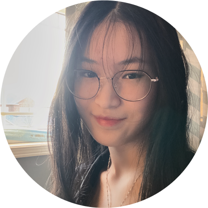

Hi, I'm Lauren Chan
I am a freelance UI designer based in Toronto who has
a big passion for video games and art.

I am a freelance UI designer based in Toronto who has
a big passion for video games and art.
My first step is to define the clear objectibes of the project to get insight. I conduct research through one on one interviews and surveys.I collect data through usability tests to futher improve and iterate my work. Having skills in empathy, critical thinking, and research methodology are essential for interpreting my research findings.
I empathize with my users through active listening and by placing myself in the user's shoes. When asking a user about their pain points regarding an existing website, I can empathize with their frustrations and challenges when they struggle to navigate certain sections. By using effective communication to uncover underlying needs, it allows me to create solutions that resonate with users on a deeper level, leading to more meaningful and impactful designs.
When conducting interviews, I ask open-ended questions to foster candid discussion. By creating a comfortable environment and crafting thoughtful questions, I am able to uncover valuable insights. For instance, when studying how users find food recipes, I delve into their motivations and browsing habits. These insights lead me into making effective design strategies and decisions.
Explore a diverse range of projects highlighting my expertise and passion
for design. Dive in and discover the transformative impact of my work.
We redesigned a website for a nonprofit animal
welfare organization named Georgian Triangle
Humane Society. By making the adoption process
more efficient, we hope to increase the amount of
pets being adopted.


Designed for those with dietary needs and restrictions. Our
app offers tailored meal plans and personalized grocery lists.
We empower users to navigate their unique dietary needs
and options effortlessly.
View all projects